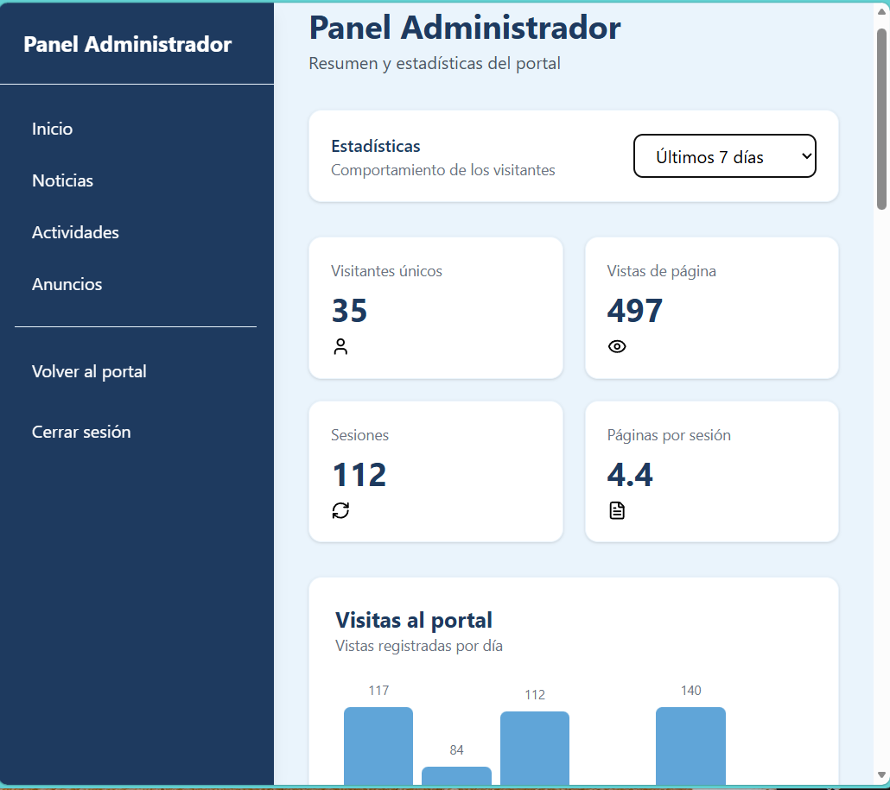
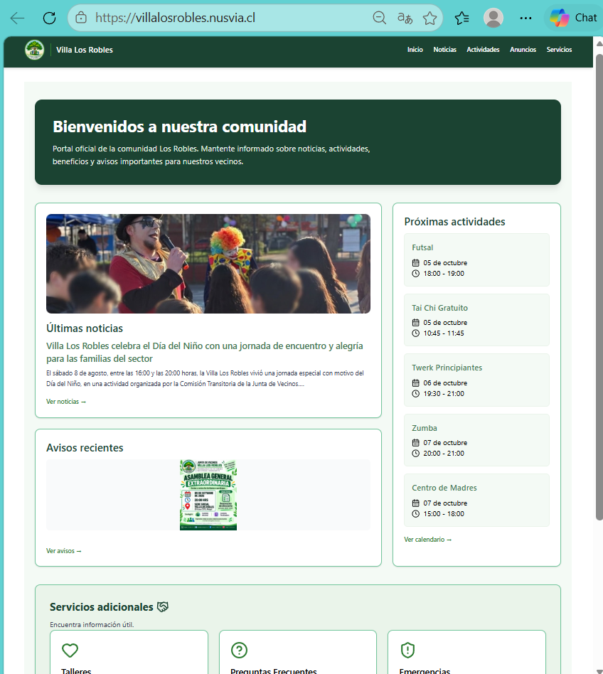

Nusvia – Plataforma SaaS multi-tenant
En producciónNusvia es una plataforma web que diseñé y desarrollé para atender a distintos clientes desde una misma aplicación, manteniendo cada organización independiente de las demás. Hoy está funcionando y en uso real con su primer cliente.
Es el proyecto con el que sigo profundizando en arquitectura y desarrollo de aplicaciones listas para producción.
React
JavaScript
Vite
Tailwind
Firebase
Qué demuestra este proyecto:
- Arquitectura multi-tenant: una sola plataforma para múltiples clientes
- Cada cliente accede desde su propio subdominio (por ejemplo, villalosrobles.nusvia.cl)
- Aplicación en uso real, con un cliente activo
- Desarrollo completo con React y Firebase, desde la interfaz hasta el backend

